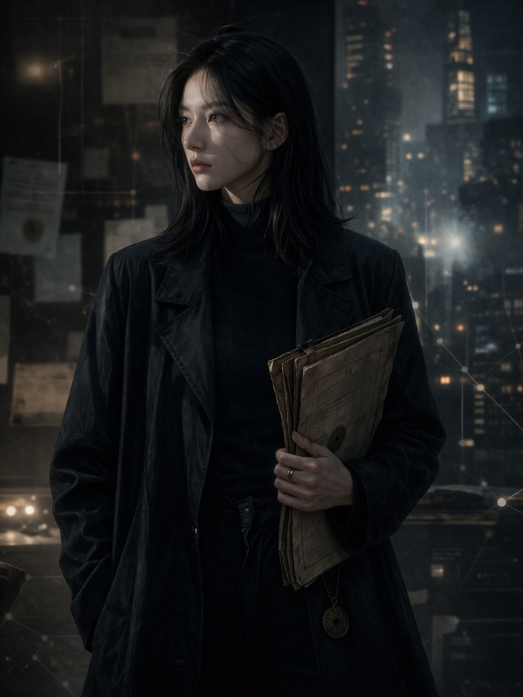
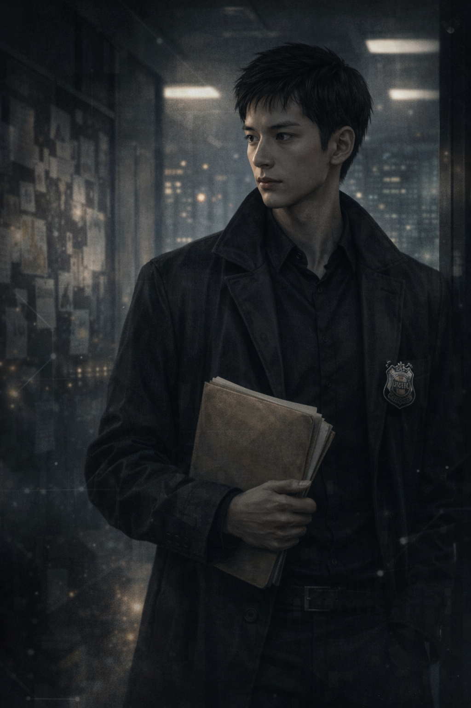
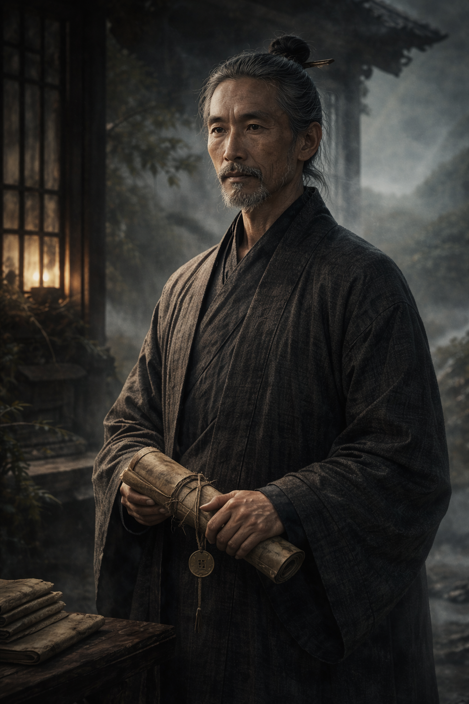

沈見微
角色圖已接入
沈見微
- 人物定位：孤兒，自幼被清衡道長帶回山中道觀養大。外冷內烈，極會看人，也極少把真心直接交出去。
- 能力核心：擅長觀察微表情、呼吸節奏與現場異常點，能把直覺轉成推理。
- 主線秘密：她極可能就是司命計畫最早一批樣本之一。
- 弧線方向：從只想查清師父之死，到願意替更多人把真相拖上台面。
這一頁改成角色檔案模式，核心人物與主要對立角色都已接上正式插畫。人物之間的距離、立場與情感張力，會在這裡先給讀者一眼讀懂。


